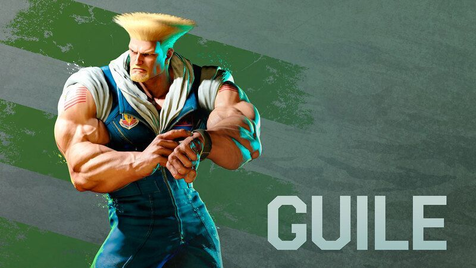

STREET FIGHTERCOMMAND LIST
入力の⇐などの矢印は長めに押す
キャラクターリストに戻る
操作方法：例

- P=パンチ K=キック（P弱やK強などは、弱パンチや強キックになる。）
- コマンド例：リュウで LS を↓ ↘ →の順にたおし、P(△ または □ または R1)のボタンを押すと波動拳を出すことができる。
|
 |
|||
| 技名 | 入力 | 説明 / 備考 | カテゴリ / メモ |
|---|---|---|---|
| ソニックブーム | ⇐ → + P |
高速で両腕を交差させ、回転する真空波を飛ばす技。 離れた間合いのけん制や攻めの起点として有効。 |
必殺技遠距離 |
| サマーソルトキック | ⇓ ↑ + K | 後方へ宙返りをしながら強烈に蹴り上げる技。 相手のジャンプ攻撃に対して無敵があるので、対空として使える。 |
必殺技近距離 |
| ソニックハリケーン | ⇐ → ← → + P | 前方に巨大な真空波を放つ技。 切り返しやコンボ、飛び道具対策など、幅広い状況で使いやすい。 発動時の入力によって、真空波を斜め上方向へ撃ち出す事が可能。 |
スーパーアーツ1近距離 |
| ソリッドパンチャ― | ↓ ↙ ← ↓ ↙ ← + P | 両腕に真空波を纏い、必殺技を開放する技。 Pボタンで、ソニックブレイクが使用可能となる。 |
スーパーアーツ2中距離 |
| クロスファイアサマーソルト | ⇐ → ← → + K | 相手を上空に打ち上げ、渾身のサマーソルトキックへ繋ぐ技。 出始めの無敵時間を活かした対空や切り返しに狙える。 |
スーパーアーツ3近距離 |